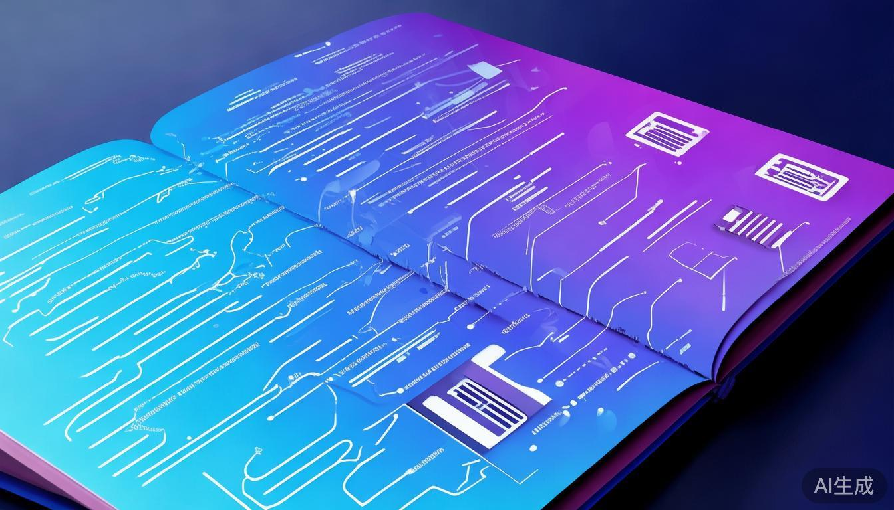

书稿总目录（旗舰产品）
工作书名：《AI 工具简史与实战全书——一部发展史，一本从 0 到变现的操作手册》
定位：个人 IP 的旗舰内容，一本书「容纳好几个东西」——历史 / 工具 / 实操 / 变现 / 未来。
每个「章」将来都能单独拆成博文、视频脚本、网站栏目。
导读
这本书怎么读？分三类读者：想了解「AI 是怎么走到今天」的人读历史篇；想「马上上手」的人读实操篇；想「靠它赚钱」的人读变现篇。全书可从任意一篇进入。
第一篇 · 历史篇：AI 与 AI 工具发展史

- AI 七十年：从 1956 到达特茅斯会议到 2026 —— 一条能看懂的时间线。
- 大模型的崛起：GPT 系谱 —— 从 GPT-1 到 GPT-5.4，为什么「规模」会带来智能。
- ChatGPT 如何点燃全民 AI 时代（2022 年 11 月，两个月 1 亿用户）。
- 图像生成简史 —— DALL·E、Midjourney、Stable Diffusion、Flux。
- 视频生成简史 —— Sora、Veo、可灵、Runway。
- AI 编程工具简史 —— GitHub Copilot、Cursor、Claude Code、Codex。
- 中国 AI 工具演进 —— 文心、通义、豆包、智谱、混元。
- 开源 vs 闭源 —— 两股力量如何塑造这个行业。
第二篇 · DeepSeek 专篇：一家公司的成长史
- 从幻方量化到 DeepSeek —— 一个量化基金为什么会去做 AGI。
- DeepSeek 发展史 —— Coder（2023.11） LLM（2024.1） V2（2024.5） V2.5（2024.9） V3（2024.12） R1（2025.1） V4（2026）。
- DeepSeek-R1 一夜刷屏 —— 公开推理过程、对标 OpenAI o1，凭什么震动全球。
- V4-Pro 详解 —— 100 万 Token 上下文、38.4 万输出、三种思考模式、价格体系。
- DeepSeek 的开源哲学与价格战 —— 它如何逼整个行业降价。
- DeepSeek 的商业化之路 —— 约 510 亿融资、估值、IPO 筹备。
第三篇 · 工具篇：全套 AI 工具图谱
- 对话 / 写作工具全评测 —— ChatGPT、Claude、Gemini、DeepSeek、豆包、通义。
- 图像工具全评测 —— Midjourney、Flux、即梦、可灵、混元。
- 视频工具全评测 —— Sora、可灵、剪映、Runway。
- 编程 IDE / 插件全评测 —— Cursor、Windsurf、Cline、Copilot、通义灵码。
- 搜索 / 浏览 / 审阅 / 办公工具 —— Perplexity、秘塔、CodeRabbit、Notion AI。
- 国内 vs 国外工具怎么选 —— 一张决策表，按需求直接挑。
第四篇 · 实操篇：一步步教小白
- 提示词的艺术 —— 从「说人话」到角色、范例、格式约束。
- 用 AI 写出一篇爆款文章 —— 选题、大纲、成稿、标题四步。
- 用 AI 做出一支视频 —— 脚本 素材 配音 剪映剪辑。
- 用 AI 做一个个人网站 —— 零基础，从一句需求到上线。
- 用 DeepSeek API 搭第一个 AI 应用 —— 拿到 Key 到跑通 Python。
- 搭建你的 AI 工作流 —— 多个工具串起来，一次做完一整件事。
第五篇 · 变现篇：个人 IP 与商业闭环
- AI 个人 IP 的定位与护城河 —— 你是谁、写给谁、凭什么记住你。
- 变现路径全景 —— 流量分成、接单、知识付费、带货、网站 SEO。
- 30 天冷启动实操 —— 从 0 到第一单 / 第一个 1000 粉。
- 版权、合规与风险 —— 什么能写、什么不能承诺。
第六篇 · 未来篇
- Agent、多模态与具身智能 —— 下一个十年会发生什么。
- 普通人在 AI 时代的生存与机会 —— 落地到你自己身上的一句话结论。
附录
- 附录 A：AI 大事记时间线总表（1956–2026）
- 附录 B：AI 工具速查表（按「做什么」查「用哪个」）
- 附录 C：DeepSeek API 参数速查
- 附录 D：小白术语表
这本书怎么和四个形态联动
- 博文：每一「章」拆成一篇或几篇图文教程，日更。
- 视频：历史篇做成「发展史」解说系列，实操篇做成「一步步」教程。
- 网站：全书正文 + 长尾关键词做 SEO，持续来免费流量。
- 个人 IP：书是信任状，博文/视频/网站是触达入口，变现靠第五篇落地。
2026-08-28 · 今日 AI 进展
2026-08-28 · 今日 AI 进展
2026年8月28日，全球AI产业延续“底层模型迭代+垂直场景落地+监管规则落地”三线并行的推进节奏，其中最具行业标志性的动态来自开源模型生态与端侧AI硬件领域。当日，Meta官方正式发布Llama 4系列的轻量化迭代版本Llama 4 Scout 128K，该版本在保持120亿参数规模的前提下，将上下文窗口拓展至128K，在MMLU、GSM8K等通用基准测试中追平上一代70B参数模型的表现，同时推理成本较同性能闭源模型降低62%。这一发布进一步拉低了企业级AI应用的部署门槛，尤其为中小团队搭建私有化知识库、定制行业Agent提供了高性价比的基础模型选项，也印证了AI工具从“大厂垄断高端能力”向“普惠化落地”演进的长期趋势。
同日，国内端侧AI硬件领域也出现值得记录的进展：小米正式推送澎湃OS 3.1稳定版，首次实现手机、平板、车机端的端侧大模型能力全打通，端侧7B模型可在无网络环境下完成文档总结、语音指令连续交互、本地照片语义检索等核心功能，端侧推理延迟较上一版本降低47%，且所有用户数据处理全程不离开本地设备。这一进展标志着消费级AI工具正式进入“端云协同、隐私优先”的普及阶段，普通用户无需为高频AI功能支付额外订阅费用，也无需担心个人数据上传带来的隐私风险，和本书“AI工具实战落地”的核心主题高度契合——工具的可用性门槛正在被持续拉平，真正的竞争力将转向场景化的使用方法与工作流设计。
监管层面，当日欧盟AI办公室正式发布《通用AI模型透明度指南》最终版，明确要求所有面向欧盟市场提供服务的通用大模型，必须在2027年2月前完成三项合规要求：一是公开训练数据中受版权保护内容的占比与来源类别说明，二是对AI生成内容添加可机读的隐形标识，三是向用户清晰告知交互对象为AI系统而非人类。该规则的落地将进一步规范AI工具的市场秩序，也为普通用户辨别AI生成内容、维护自身合法权益提供了制度保障。当日值得普通AI使用者关注的实用信息可归纳为三点：
- 开源模型选型参考：Llama 4 Scout 128K已在Hugging Face平台开放权重下载，个人开发者可在单张24G显存的消费级显卡上完成部署，适合搭建个人本地知识库、离线写作助手等工具，无需依赖付费API。
- 端侧功能升级提示：已升级澎湃OS 3.1的用户可直接在系统设置中开启“端侧AI优先”选项，日常处理工作文档、整理聊天记录等场景可优先调用本地模型，既提升响应速度也避免敏感信息泄露。
- 内容辨别提示：随着欧盟AI生成内容标识规则进入落地倒计时，2026年下半年国内主流内容平台也将陆续上线AI内容标识功能，用户在获取网络信息时可优先查看平台标注的内容来源标签，降低被AI生成不实信息误导的风险。